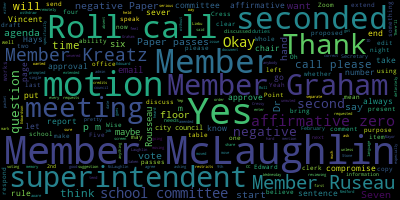

[Unidentified]: We should have it, Brianna.
[Lungo-Koehn]: Thank you so much, thank you. Okay, it is 4-5, the Medford School Committee, Committee of the Whole meeting. Meeting date is 3-9-2022. There'll be a Committee of the Whole meeting on Wednesday, the 9th, 2022 from four to 6 p.m., held remotely on Zoom. The purpose of the meeting is to discuss, edit, and approve the draft of the school committee rules packet proposed by member Rousseau. You can zoom in or you can call in using number 929-205-6099. Please enter meeting ID 930-1644-8588 when prompted. The purpose of the meeting is to discuss, edit and approve the draft of the school committee rules document proposed by member Rousseau. If my memory is correct, we left off on page 1112 that we were reviewing and asking questions about. Yes, member Cress has her hand up and then member Rousseau.
[Kreatz]: Yes, Mayor, I checked in with Mr. Russo the other week and we stopped at number 67. I need to go back because I think we moved too quickly in the first meeting. I just have to bring something up about number 51 that I didn't get a chance to mention. So I wanted to just kind of go back to just review number 51 again, because I had notes and I never got a chance. I noted that I didn't get a chance to mention anything on number 51.
[McLaughlin]: And I also just point of information also in there, if we could put up the document so that folks watching or at home can see the document that we're referring to, that would be helpful if someone could put it up as a screen share, please. And then that way, I'm not switching between windows because I'm working on a laptop with an elevated foot and makes it a little tricky. So the screen share would be great.
[Lungo-Koehn]: I have a hard copy, so I'm not sure if school admin could screen share. And member Kreatz.
[4thVVEd7zdo_SPEAKER_02]: Peter, hold on.
[Lungo-Koehn]: Thanks. And member Kreatz, why don't you start off by going to. Point of order.
[Ruseau]: We haven't taken a roll call.
[Lungo-Koehn]: Roll call. Roll call has been requested by member Ruseau. Please call the roll.
[Ruseau]: Thank you. Member Graham.
[Lungo-Koehn]: Here.
[Ruseau]: And I'm using my memory since I left a little thing at home. So I'm sorry they're going to be out of order. I don't know. Member Hays? Here. Member McLaughlin? Here. Oh, Member Kreatz, you would have been ahead. Yes, here, here. One, two, three, four. Member Mustone will be joining us later. And wait, one, two, three, four. Member Ruseau? Five. Mayor Lungo-Koehn, did I skip somebody? I'm sorry. I think that's all of us. I'm used to having it written down.
[Lungo-Koehn]: I am here. Yes, there's six in the affirmative, one absent. So for now, we can move on to number 51, member Cressy, you had a question on that.
[Kreatz]: So I originally in the prior meeting, I had notes listed here that it says, you know, regular meetings will begin at 630. That's great. We made that adjustment in the last meeting to correct it from another time that it had said no meetings at school committee will go beyond. It says 11 p.m. I just have concerns about that for everybody who is in the school committee meetings. The administrators, the students, the teachers, just everybody, the public watching. I think 11 p.m. is just too late in the evening. We start at 6 30 p.m. I think it's more reasonable to have it go from like 6 30 to 9 30 and if there's a motion to recess Then we should take a roll call, you know, is there a motion to recess, you know, and put everything on the table that we haven't covered, and then it gets put on the next meeting. So I, I have a motion to amend the time change from 11pm to 930pm. And the chair will then ask you know as we're getting close to 930pm. If there is a motion to recess or continue the meeting until an extended period of time is stated. So for example, like the chair would say, is there a motion to recess the meeting if we're not done. If we're close to being done, then you could maybe say, is there a motion to recess the meeting until like 10 p.m., you know? And we might get done before 10 p.m. But I just think going from 6.30 to 11 p.m. with everybody's busy days and lives and having to be at school the next morning or work very early. I mean, I don't retain anything after 9 p.m. It's just gone.
[SPEAKER_09]: And- I second that member Kreatz.
[Kreatz]: Okay, thank you.
[Lungo-Koehn]: The 11 be moved to 930.
[McLaughlin]: Yes. And by member McLaughlin, can I actually make a comment Mayor before we do the road, it would it be appropriate if I make it just a brief comment, or maybe we can hear from. maybe we could hear from the superintendent. I mean, I know that this has been a conversation that I've had with a few of the administrators and to that exact point, I know that with COVID, obviously we had really long hours and really long meetings and hopefully we don't have to repeat any of that again anytime soon. But even with 11 o'clock, getting up so early, I know from the administrator's perspective, I've heard the same, that it's been very difficult. And I also, definitely get really tired come 10 o'clock, especially if it's an intense meeting or there's a lot of material. So just wanted to ask if we might hear a weigh in from the administration if they're able, if that sounds reasonable for them hourly.
[Edouard-Vincent]: Yeah, I definitely would say having the 930 end time is reasonable knowing that sometimes we have either executive sessions or we could have future subcommittee meetings or future committee of the whole meetings that are back to back to a regular meeting. So we still potentially could be meeting from four or five until 9.30 and then do a check-in at that point in time. I do think 11 p.m. and it's just, that's a little too much. It's too long a day for us to be able to really function coherently. So I would be in support of a 9.30 time to check in, knowing that we may start earlier.
[Unidentified]: Thank you.
[SPEAKER_04]: Member Hays, then Member Ruseau.
[Hays]: Thank you. I mean, I certainly don't want to make anyone's days longer. My only concern is that, and I don't remember historically, even though I attended most of the meetings, how if most of the meetings do go very long, but at some point, if we keep backloading meetings with the previous week's unfinished agenda items, we're not going to make it through all of our agenda items. And I don't, again, I think I've said this a lot, but I don't know where the balance is, but I'm a little concerned that if we cut it off too early, that on those days where we have a lot of agenda items, they're just gonna keep getting pushed. I thought the purpose of this particular rule was really just to say, that's the outside time we will go to. Not that generally we expect our hope meetings to go that long, but that this would just be the very latest we would ever go. So I'd be curious to hear what other people have to say. I am concerned about pushing items off too much.
[Ruseau]: Thank you, member Ruseau. Thank you. Um, that is, uh, member Hays's interpretation was correct that this was, uh, sort of drawing a line in the sand. We've gone past 11 o'clock on many occasions. Um, and I just thought it's important to remind us, the body, um, and anybody else watching that our meeting in February before the last one, I'm sorry, I don't have the date, had one item on the agenda, one item, and we went to 930. Um, and that was a light That was as light of an agenda as I think I can recall us ever having. So, I guess I don't mind 930. I would just like to know what is the body intending to do when there's six unfinished items on the agenda, when there's public that has come to speak on items on the agenda that aren't going to happen till 1030 which would be awful but has happened. Um, I mean, if this is going to be whatever our rules are, I mean, I, I, the language as it is, regardless of whether it's nine 30 or 11 is the meeting is over and that somebody stands up and makes a motion to say, let's just keep powering through it. It's not that we will discuss, Hey, it's late. I retired. Should we keep going? It's the meeting is over. That's the language of the role. Um, so, um, It's, to me, it seems like 9.30, I'd like to be out at 9.32. I go to bed at nine o'clock on a regular night, but we will have, we will certainly have to discuss going to weekly meetings. And I know the administration's not interested in that. We will have to go to weekly meetings if we're quitting at 9.30 on a regular basis. We have one item on the agenda and we went to 9.30. I assume that we have lots of work to do, that the school committee is not a rubber stamp. And I mean, when this item goes to the floor of our meeting, this could drag one meeting past 9.30 and just approving these set of rules if the public has comments on it. So the intent was 11 o'clock is the sort of the red line. As it's approaching 11 o'clock, we make it clear we're gonna bump everything or we have a conversation about the two extra items that are on the agenda that we can't get to, but that we all have something in our minds that is like, okay, this is getting ridiculous. We've got to stop because we all agree, none of us, I'm not, and I've heard from other members, none of us are at our best at 11 o'clock. and certainly the administration and God forbid, principals have to be at a meeting that late because they have to be at school to crack a dawn the next day. So that's all the 11 o'clock was intended for, but that was the intent. Thank you.
[Lungo-Koehn]: Limbu Graham, did you have a hand up?
[Graham]: I did. I do. So I think we've been elected to do a job, and I don't think the public particularly elected us to do an easy job. And I think there's a general expectation that we'll come and do the job, whatever it takes. And having said that, I'm also not a proponent of meeting very, very late into the evening. It's the reason why I voted against not starting a meeting until 6.30 p.m., because as I've been tracking, literally, since we took that vote, we never get to new business before seven o'clock, really before 7.30. So we have a solid hour of things we have to accomplish easily, sometimes more, that happen before the kinds of items that the public would be wanting to weigh in on And it's the reason why I think 6.30 is late to start, given that we're all concerned about the administration and the demands we're placing on them in particular. They are full-time employees, they're not elected officials, but they're sort of stuck with us for the duration. So I would be a proponent of starting the meeting at six and saying that the end time of the meeting would be 1030. I feel like that gives us a bigger, better window to actually accomplish our business without having to go to weekly meetings, bringing in the outside a little bit from 11 o'clock, and really not compromising the public's ability to participate. And I would welcome my fellow committee members' thoughts on that.
[Lungo-Koehn]: Dr. Edward, Vincent, did you have a comment or not? I think you unmuted.
[Edouard-Vincent]: Yeah, just listening to what's being said, I think when the meetings need to run long or if there's a heavier agenda and we need to have longer meetings that those will happen. And to member Rousseau's point, I think that some of our meetings just by nature, they do end up running long. I can say to you, that the 11 o'clock end time was shocking to a lot of colleagues that I just was getting some feedback for from MASC. They have stated to us that efficient meetings should be anywhere between an hour and a half to two hours long to be able to go through an agenda. And so we on the school side have been making a significant effort to try to be as concise as possible, and not have. you know, excessive reports that we're not able to get through it in a reasonable amount of time. So whether we start at six o'clock and you say to yourself, a two hour window that would still bring us to 8.30, whether you start at 6.30 to 8.30, nine o'clock, 9.30, I had just felt that that would be reasonable from a planning perspective. It just makes for a very long day for the school side staff, because it's not like anyone starts work at noontime, or two in the afternoon, and says that they're going to work until 11pm. If necessary, like everyone is in the field working a full day, and then going to the school committee meetings which we understand have to happen. And so I'm just thinking about bandwidth and trying to have that balance. So my hope would be that we would not have many meetings that have to go to 11pm and trying to keep the agendas concise enough that, you know, it could be a robust two hours, including the conversations that take place to two and a half hours and if we need three hours or four hours. then you as a body could just vote to say, you know, this is an important topic today. We need to continue to, you know, push through and get to the end. Because we, I think sometimes there have been votes where, especially when amendments were being made and these were meetings that went so late into the evening that by the time it took place, people weren't really sure on, you know, what was the final motion, because it just got too late. And I just feel for everyone's work-life balance and mental health, that having a reasonable cutoff time would be better.
[SPEAKER_04]: Member Kreatz?
[Kreatz]: Yes, and I'm going to keep my motion on the floor. I happen to, you know, understand and agree with the superintendent, I have to get up at 445am, and I am just exhausted by 930, and it's the next day. It's like I was on a boat or a plane. I can't get up. I can't think. I drink coffee. It just doesn't matter. You can't focus. Even the next day, you're affected by the very, very, very long day. And you can't drink coffee before the school committee meeting, because then I'll be up all night. So it's just I'm going to keep my motion on the floor, and I can hear from both sides. And I just think that if we, you know, have this time frame and we know that we're going later and there's important agenda items or there are people from the public just as i mentioned in the part of the motion that a motion can be made to extend the meeting until xx time and i think that would be reasonable for the administrators the school committee the public and just the students just everybody i'm just trying to make it equitable for everybody, everybody has to get somewhere in the next morning, whether it's school, work, family, everybody's got to get up, you know, so I'm just trying to, you know, I've seen our meetings, they can carry on, we're doing much better. And sometimes there are items that take longer, but that's not typical. Typical, we do run to 930. And then there's always the occasional late meeting, which can happen with a controversial or very important topic. So we're not like, We're not blocking it down to just 6.30 to 9.30, that's it, the meeting's over. We're still giving, as part of my motion, I'm still giving the offer to extend the meeting if a motion is made. But I won't talk, I let other people talk. Yeah.
[Lungo-Koehn]: Thanks. Can I ask Ms. Wise, if you could mark member Ms. Stone as present, and then just also maybe a compromise, maybe we could go to 10 p.m. and always can extend it after 10. That's a good compromise. Maybe we can have a motion on the floor.
[McLaughlin]: I currently emotion with a second. So if we want. So, member credits put emotion I seconded it we were debating the motion but the. If you're suggesting an amendment to member credits motion. I'm not sure what you're suggesting but there's a, there is a motion on the floor with a second.
[Lungo-Koehn]: I just wanted to mention that would be up to member credits if she wants to withdraw and present.
[Kreatz]: I don't wanna withdraw the motion, but I'm thinking, I heard from Ms. Graham and maybe we could make the alternative where we could start the meeting at six, we could end the meeting at 9.30. So that's the additional half hour so that we're not keeping the administrators past 9.30 unless there's an extension to do so. So I'm making a motion now to change the start time to 6 p.m. and the end time to 9.30 p.m.
[Lungo-Koehn]: Just if I may, that wasn't Member Graham's suggestion. She said six to 1030. So I just want to make that clear.
[Kreatz]: Right, and I'm sorry, I meant to say the start time that she mentioned. So my motion, I'm going to change to, let me just get back. I just have to close the window to look at the words here, sorry. So I'm amending my original motion to read The regular school committee will begin at 6 p.m. No meeting of the school committee will go beyond 9.30 p.m. If the school committee is still meeting at 9.30 p.m., the chair will ask, is there a motion to recess the meeting until a certain time? Or is there a motion to extend the meeting beyond 9.30 in the evening and state the time so that everybody understands that there is an end time coming, whether it's going to be 10 or 10.30? Um, a motion to continue the meeting requires the two thirds vote. So the time changes would be 6.00 PM to 9.30 PM second member.
[Lungo-Koehn]: And I'll just, it's four 30 now member Hays and member Graham.
[McLaughlin]: I also have my hand up mayor.
[Lungo-Koehn]: Thank you. Oh, and then member McLaughlin.
[Hays]: So I just feel like we had a pretty lengthy discussion about the six versus 630 start time last time. And if we're going to keep revisiting these, it's going to make this meeting really lengthy, but We did have a discussion about how the six o'clock time is much harder for community members who want to watch, because that's a time when either they're just getting home from work, a lot of people, or busy getting dinner ready, whatever. And so we had a long discussion about keeping it at 6.30 because of that very reason. So I would vote to stay with that, but I guess we'll take a vote on the motion.
[Lungo-Koehn]: Okay, and you can always motion to sever, start and end time if you want, Member Hays, Member Graham, and then Member McLaughlin.
[Graham]: I am sensitive to the fact that balancing all of these competing priorities is really hard. I just go back to thinking about the job we have been elected to do, and sometimes that job is going to be longer. I think it has to, You know, there have to be some guardrails that help us. be efficient and brief and all those things. So I do think starting at six, I don't think that erodes the public's ability to participate because like I said, we don't get to those agenda items until much, much later in the game. Our meetings are recorded and can be watched at any time. So I feel like that does mitigate some of that six o'clock start time concern. I think if we could all agree on like a six to 10 time frame, I think that would actually be a nice compromise. And, you know, continuing to work to not be meeting at 10pm. But, you know, Kathy, my suggestion would be six to 10, so that we're not fighting by a vote of two thirds about whether to continue a meeting, which could quickly become about avoiding agenda items. and disappointing the public who showed up to speak. So I would like to see us think about the consequences of this in real time, playing out, needing two thirds of a vote to continue at times when we have a room full of people who came to speak is not going to be pleasant. So I would rather our outside times be perceived as reasonable by everybody and never be construed that this committee is trying not to work hard on behalf of the students of Medford. Thank you, Member Graham.
[Lungo-Koehn]: I mean, Member, thank you, Member Graham. Member McLaughlin.
[McLaughlin]: Thank you. I appreciate my colleagues' willingness for negotiation. And I just also for clarity's sake, wanna just say, I don't think for me certainly, and I don't think for any of our colleagues, it's about working less. I think it's about working more efficiently. And I think everybody would agree that a lot of these meetings can go on. And in some cases it's reasonable, in other cases I feel like it's not. But I do think that some of the rules that are being proposed could alleviate some of the issues that we've had in the past. So hopefully we'll see more efficient meetings based on some of the rules that are being proposed that we're going to be bringing before the committee. So there's that piece of it. And I am, again, super sensitive to the staff and thinking about an additional four hours after their long day. It is a lot, but I'm also sort of open to the idea of a six to 10 window with the full understanding that 10 is not the cutoff. I mean, it's not the sort of the norm, it would be the cutoff. But again, if folks are interested in severing the motion and looking at, you know, the start time and the end time, I think that's also a good consideration. But for me, I do think four-hour meetings. I mean, think about a business. If you were in a four-hour meeting and people were like, you know, this is four-hour to meet, you know, after two hours, what's the productivity level? I think we would think about that. Now I know businesses have more meetings than every two weeks. So, you know, the other option is, you know, meet more frequently at less times. And I think that that would also be a whole discussion that people would not, you know, there would be the pros and cons again. So I'm just trying to put a few things out there, but I want to make it really clear. One, it's not about hard work. I think we're all hard workers. Two, it's about efficiency and having efficient meetings. And three, for me, it's about the sensitivity towards the staff that had very early mornings and very packed days. Thank you.
[Lungo-Koehn]: Okay, there's a motion on the floor for a start time of six and an end time of 10 with the ability to extend, seconded by Member McLaughlin. Roll call. Mayor, did you say that?
[Kreatz]: What about, I didn't withdraw my motion.
[Ruseau]: I think the current motion is 6 p.m. start, 9.30 p.m. end.
[Kreatz]: That was the motion that Ms. McLaughlin seconded me on. Gotcha.
[Lungo-Koehn]: Okay. Member Hays, did you want to speak one more time?
[Hays]: So I don't know how to do that. You suggested severing the motions. I'd like to sever.
[Lungo-Koehn]: Motion to sever. Second. seconded by Member McLaughlin. Roll call vote.
[McLaughlin]: So the motion to sever, just to be clear, you're severing the start time and end time, so we'll take a vote on each item, is that correct?
[SPEAKER_03]: Correct.
[McLaughlin]: But first, we're voting on whether to sever the motion, is that correct?
[Lungo-Koehn]: Yeah, first motion to sever is then seconded, and we'll take a roll call on that.
[Ruseau]: Great. Member Graham?
[Graham]: Yes.
[Ruseau]: Member Kreatz? Yes. Member Hays. Yes. Member McLaughlin.
[4thVVEd7zdo_SPEAKER_02]: Yes.
[Ruseau]: Member Mustone.
[4thVVEd7zdo_SPEAKER_02]: Yes.
[Ruseau]: Member Ruseau, yes. Mayor Lunko, current.
[Lungo-Koehn]: Yes, 70 affirmative, zero in the negative. Motions are severed and there's a motion on the floor by Member Kreatz, seconded by Member McLaughlin to start the meeting at 6 p.m. We can take a roll call, please.
[Unidentified]: Number Graham?
[4thVVEd7zdo_SPEAKER_02]: Yes.
[Unidentified]: Number Krantz?
[4thVVEd7zdo_SPEAKER_02]: Yes.
[Unidentified]: Number Hayes? No. Member McLaughlin?
[4thVVEd7zdo_SPEAKER_02]: Yes.
[Unidentified]: Member Mustone?
[4thVVEd7zdo_SPEAKER_02]: Yes.
[Ruseau]: Member Ruseau? Yes. Mayor Lungo-Koehn?
[Lungo-Koehn]: No. Five in the affirmative, two in the negative. The meeting will start at 6 p.m.
[Ruseau]: Shall I do the 930 now? Yes, please.
[Unidentified]: Member Graham?
[Graham]: No.
[Unidentified]: Member Kreds?
[Graham]: Yes.
[Ruseau]: Member Hays?
[4thVVEd7zdo_SPEAKER_02]: Yes.
[Ruseau]: Member McLaughlin?
[4thVVEd7zdo_SPEAKER_02]: Yes.
[Ruseau]: Member Mustone?
[4thVVEd7zdo_SPEAKER_02]: Yes.
[Ruseau]: Member Ruseau? No. Mayor Longo turns.
[Lungo-Koehn]: Yes, five in the affirmative, two in the negative. Meeting shall end at 9.30 unless extended. Okay, moving on to pages 10, 11, and 12, where we left off last time.
[Kreatz]: What numbers are those?
[4thVVEd7zdo_SPEAKER_02]: Starting number 56. Yes, 67 to 75.
[Graham]: Mayor.
[Lungo-Koehn]: Yes, member Graham, I just heard.
[Graham]: I believe that at the last meeting we put number 67 on the table and I would like to make a motion to take it off the table so we can discuss.
[Lungo-Koehn]: Motion to take number 67 off the table by member Graham, seconded by member McLaughlin. Roll call, please.
[Ruseau]: Member Graham.
[Unidentified]: Yes.
[Ruseau]: Member Kreatz. Yes. Member Hays.
[4thVVEd7zdo_SPEAKER_02]: Yes.
[Ruseau]: Member McLaughlin?
[4thVVEd7zdo_SPEAKER_02]: Yes.
[Ruseau]: Member Mustone?
[4thVVEd7zdo_SPEAKER_02]: Yes.
[Ruseau]: Member Ruseau, yes. Mayor Lungo-Koehn.
[Lungo-Koehn]: Yes, 70 affirmative, zero in the negative. 67 has been taken off the table.
[Graham]: Mayor, I would make a motion to approve that as written.
[McLaughlin]: Can we get a little, I'm sorry, Mayor, may I? Yes, Member McLaughlin. Can we get a little explanation of this a bit? It feels very complicated.
[Ruseau]: Member Ruseau. Thank you. Yes, it is complicated. There is absolutely no question about it. I actually, this is just Robert's rules here. It is, I included it as a rule because it's so complicated, but also because it often gets confused between, rescinded gets confused with, what's the one after, the motion to reconsider. And I thought it was really important to have the two of them back to back and have them in here so that if a member is in a meeting and needs to, do one of these two things, or they don't have to go, you know, you can go to the Roberts Rules website, you will not find this, they want you to buy their book. So you'll have to find your book and you'll have to figure out the right way to do it. So this is, there is nothing in this that is not exactly what Roberts Rules requires. And so I do want that to be clear that I've not changed the rules. I'm just, this is a particular rule that I'm elevating into the document because I know as a member, I think this is a complicated thing to keep those two things under, to keep them clear. And it felt like other members might also find that helpful.
[McLaughlin]: Mayor.
[Lungo-Koehn]: Member McLaughlin.
[McLaughlin]: Thank you for that explanation. That's helpful. And I do appreciate at the end of that, of the rule having in parentheses that, you know, see Robert's Rules of Order or per Robert's Rules of Order. And, and, you know, when that's the case for this, and I guess the next one, that would be really helpful. So folks know that that is part of the rescind and reconsider. And I find that with my Robert's Rules of Order book, I often have to read it a couple of times to understand the process and also sometimes YouTube videos or what have you. So I do think that's helpful. I think it's a little complicated as one reads it. And I assume others will think the same, but if we have the Robert's Rules of Order and I might make a friendly suggestion for a hyperlink or something, that would be really helpful. to Robert's Rules, please.
[Lungo-Koehn]: Member Ruseau?
[Ruseau]: Thank you. I was gonna wait till we get to the end of this, but I was actually going to make a motion to be given authority to go through and add Robert Rules of Order references to all the places that it belongs. I don't have those available right now, but that was something I was gonna suggest that we do add to this document, so.
[McLaughlin]: motion to add Robert's rules of order to the specific rules being proposed when it's relevant with a hyperlink to Robert's rules so that for posterity, people who succeed us will have access to what it was we were actually referring to.
[Ruseau]: Yes, the word hyperlink was used, hyperlinks mean going to a webpage, but these are not available on the web. So can we just, would you change the language of that to be just a reference?
[McLaughlin]: Yes, a reference, but I would prefer a hyperlink because these will be available on the website at some point, correct?
[Ruseau]: No, Robert's rules. No, the rules, our rules. I'm not sure I'm following what the request is.
[SPEAKER_09]: So may I, Mayor?
[Lungo-Koehn]: Other than anything, I believe member Graham has her hand up.
[McLaughlin]: Yep. So all I'm saying is that I think the reference to Robert's Rules is great. And then I would ask that there be a hyperlink once this is on the website to the Robert's Rules because I am assuming our rules will be on our website. And then if somebody is reading, say, a member of the community or a new school committee member for orientation or anything, Our rules on our public school website, and they see something referencing Robert rules of order for one of the specific rules that they could click, you know, to that hyperlink and be brought there so that they could learn more about. what it is we really set our rules up on. So if that, I hope that clarifies. So I would amend my motion to say when the, you know, Robert's rules of reference for any of the motions, I mean, for any of the rules that are proposed when it's appropriate, parenthetically or referenced, and then a hyperlink for when those go live online.
[SPEAKER_04]: Number Graham.
[Graham]: Yeah, just to clarify, you want a hyperlink to the General Roberts Rules of Order website. Is that what you're asking for? Because this specific detail is not available on the website because they want you to buy the book. I think that was member Rousseau's point.
[McLaughlin]: For this specific one for rescind, but it is for, yes, but there's lots of information for the others. So I think not specific to the particular motion, but in general, so that people know to what we're referring. Thank you. Okay. Second.
[Lungo-Koehn]: Member Ruseau?
[Ruseau]: The website does not actually provide you with the Roberts Rules of Order. There are a few, there's an FAQ where you can sort of see some summaries of questions that are common, And even within their own FAQ, they will include a reference, you know, the RONR page 146 and edition 29 or 12 or whatever it is. You cannot refer to the individual rules of Robert Rules of Order on the web because they are proprietary copyrighted or whatever the right language is. So it is not possible to add a reference to what the language in Robert Rules of Order is.
[McLaughlin]: Mayor.
[Lungo-Koehn]: Member McLaughlin.
[McLaughlin]: Thank you. So to that end, it doesn't have to be that specific to the specific roles. I am asking that people are directed to what and including school committee members are directed to what Robert's Rules of Orders actually means and where they can get more reference. And I think that by going to the home page of Robert's Rules, they can see, yes, books, they can see references. I'm sure they can understand that, oh, if I Google or YouTube this, I'll probably be able to figure it out, but at least some landing page, something that explains to them what that actually means, because otherwise it has no anchor, no meaning, especially for a lay person. So just simply asking that we include the hyperlink, not specific to each of the motions as member Graham seconded.
[Lungo-Koehn]: Yes, motion by Member Laughlin, seconded by Member Graham.
[Ruseau]: Roll call, please. I need the language, Mayor. I can't call it until I can type it.
[McLaughlin]: Shall I state it again? Please. I would ask that there'll be parenthetical information for each of the motions that are Robert's Rules of Order specific, as in example 67 part D, see Robert's rules of order. And then, you know, at the end of the document for reference material or what have you, which this doc, I would ask that this document ultimately be posted online. So that's part two of my motion. And then the third part is that at the end of that document, there'll be obvious, you know, an API reference to Robert's rules of order with a hyperlink to a website, please.
[Ruseau]: I'll go back to the recording and write all that down.
[Unidentified]: Was there a second? Sorry. Second by member Graham. Member Graham.
[4thVVEd7zdo_SPEAKER_02]: Yes.
[Unidentified]: Member Kreatz.
[4thVVEd7zdo_SPEAKER_02]: Yes.
[Unidentified]: Member Haynes.
[4thVVEd7zdo_SPEAKER_02]: Yes.
[Ruseau]: Member McLaughlin. Yes. Thank you. Member Mustone. Yes. Member Rissell. Yes. Mayor Longovern.
[Lungo-Koehn]: Yes. Seven in the affirmative, zero in the negative. Paper passes. As amended.
[Ruseau]: Yes. I have in my notes that member Graham had made a motion to accept the rule as written. I don't know if that got lost.
[Lungo-Koehn]: We can second separate roll call on that if you'd like. Yep, seconded by member McLaughlin, roll call.
[Unidentified]: Member Graham?
[4thVVEd7zdo_SPEAKER_02]: Yes.
[Ruseau]: Member Kreatz?
[4thVVEd7zdo_SPEAKER_02]: Yes.
[Ruseau]: Member Hays?
[4thVVEd7zdo_SPEAKER_02]: Yes.
[Ruseau]: Member McLaughlin?
[4thVVEd7zdo_SPEAKER_02]: Yes.
[Ruseau]: Member Mustone?
[4thVVEd7zdo_SPEAKER_02]: Yes.
[Ruseau]: Member Rossell, yes. Mayor Longo?
[Lungo-Koehn]: Yes, seven in the affirmative, zero in the negative, paper passes. Are there any questions on page 10, 11, or 12?
[Kreatz]: What numbers are those? I'm sorry, Mayor, because I just have mine in a Google Drive, so I just have the numbers. I don't have pages. They're different pages.
[SPEAKER_03]: Number 68 to 78 we can start with.
[Kreatz]: Okay, I'm just going through those numbers. Yes, so I do have some concerns about number 77. I actually even reached out to the city council. So it says all requests passed by the city council that pertain to member public schools will be sent to the school committee to be part of the next agenda in accordance with the school committee procedure and timing is found in addendum one, add item to agenda. The city clerk is authorized to add items to the school committee agenda, following our established procedure and add item to agenda. The school committee may refer such requests to the superintendent upon a majority vote. The superintendent is not authorized to respond to city council request to attend city council meetings or perform any actions requested by the city council without a majority vote. I was just reading this and, you know, it's just. You know, the city council is another body. And we have the add the item, add the agenda item instructions for us. So we're going to give our instructions to the city clerk to add items to the school committee agenda. I just think, I don't think that is a good idea. I'm not sure. whether I'm misunderstanding this, and then I wasn't sure, and it's not something that's currently being done. I did, you know, ask about that. And then where the superintendent is not authorized to respond or request to any email, you know, correspondence with city council, I feel it's too restrictive. And, you know, I'm just wondering if I could maybe hear from the superintendent on what her thoughts are on the way that this rule is written. I really just don't really follow it.
[Lungo-Koehn]: Thank you, Member Kreatz. I tend to agree, if I may, from the chair. I think it definitely restricts the superintendent's ability to do her job. So I won't be voting to approve this either. If anybody else has a comment, or Dr. Edwardson, Member Ruseau?
[Ruseau]: Thank you. So, the part about adding to the agenda I actually, I don't know what the right process should be the city council in the last couple of years has in fact asked things that they wanted the school committee to respond to, and we got an email from somebody I think in the mayor's office. To all of us as individuals, we as individuals have no authority to respond to the for the school committee, so we have no process right now at the school at the city council wants to ask the school committee a question. There's no way for that to happen. And any of us showing up at the city council to answer as the representative of the school committee in our last meeting, we just made that clear. That is not acceptable either. So I don't know what the process is now, but ignoring the city council, which I think we should respect them and as another body in our city, they deserve our respect, but we have no process for how to respond to them. So that's all I'm trying to lay out here is some process. It can be any process. It doesn't have to be using our format. It can be somebody, the president of the council, the city clerk. I don't care who sends an email to the superintendent and asks that it be added to the agenda. I don't have any preferences at all in that. This was just my first thought is that we already have a process. So it's not that complicated. So why not use it? But it doesn't have to be that. As for the part about the superintendent, being called to the city council. We have an org chart on page, I think, two or three of our budget every single year, going back to at least 1997, that says the organization of our government, the superintendent has no line in any way, shape or form with the city council. When the city council beckons a superintendent, she should not jump. there is absolutely no relationship between the superintendent and the city council. And I think it's not fair to the superintendent. I mean, what if we had a city council that expected the superintendent at every meeting to answer questions? So now Monday nights are school committee and Tuesday nights are city council meetings. We need to make it crystal clear that if the city council wants to talk to the superintendent, we have to give permission for that to happen because that's actually the facts. That is a fact. It's not really a discussion point, it's a fact. And I think it might be collegial and nice if the superintendent just shows up whenever they ask, but there's only so many hours in the day the superintendent works for this body. And I think that expecting the superintendent to report to two public bodies is just highly inappropriate. So that's why I wrote this rule. That's all I can say so far.
[Lungo-Koehn]: Member. Oh, Dr. Edouard-Vincent.
[Edouard-Vincent]: Um, I actually feel like In my short time in this role, the four years that I've been in Medford, I have never had a situation where the Medford city council, you know, was calling me on like a weekly basis. Really the majority of my interaction with the city council would be at the end of the budget season. The requests that have been made, over the past few years have been really reasonable requests or maybe an inquiry. It has been nothing, like I don't want it to, I don't want to present that, you know, I'm, my inbox is being flooded by council members. Sometimes it's a very, you know, simple inquiry or a quick question, maybe a constituent, may have asked them a question and they just said let me just reach out to the schools. So it's something that is so rare that I don't feel like number 77 is really necessary. The add item to agenda, it's over the past, it's even hard to recall what some of the requests were because they were usually a very reasonable ask and it is not something that they are asking on a weekly basis. It could just be, you know, can you provide a little clarity, you know, on a particular thing, maybe something in the vocational school or wondering that they were just wondering about. It's so rare that I almost feel like Putting this in insinuates that there is a problem. I deal with the clerk's office. Every time we have a meeting, we send our communications to the clerk. And he has always been responsive to posting and those kinds of things. I have never, you know, had something asked of me by the city council that would, you know, be a cause for alarm. And if something like that were to occur I definitely would notify the membership, this body immediately. I don't think that it's necessary. If there was a difficult request, I would definitely make sure that we added it to the agenda. And usually when we do receive a request from the city council, it comes from the mayor's office. So there's some kind of communication of this is a wondering or an inquiry. But it is so rare. I mean, I don't even think in the past four years, there probably weren't even 10 questions in four years. I think fewer than 10, maybe five or six. Very, very rare.
[Lungo-Koehn]: Thank you, Dr. Edward-Vincent. Member Graham, Member Kreatz, Member Ruseau.
[Graham]: Thank you. My understanding of this motion is not that the council would have to do this if they had a harmless question, but when they take the time to talk about something on the floor and take a vote on something that pertains to schools, or like, we're gonna ask the school committee something, or we're gonna ask the superintendent something, when they've taken the time in their meeting to weigh in in a majority way, On something I do believe that should come through the school committee. I don't think we have a process today, which is why it doesn't and i'm glad that it really hasn't become an issue, but I just want to point out where we're headed towards some very. interesting discussions as we talk about the high school complex, as we talk about ARPA funds, as we talk about funding for our schools, as we talk about all the things that we know are coming. And I am a proponent of having process that is not onerous, but establishes good habits in times when it's easy to have good habits. If this comes to blows about the high school, that is not going to be the time for us to be establishing process. So I am a proponent of having a way for this to happen in a consistent and rational manner. And the last thing I'll say is that we get a lot of pushback from the administration, rightfully so, when we ask for things because there is not enough capacity to do whatever the thing is that we might be asking. And I think it's reasonable to think that some of these things from the council could over time take time. And if they're gonna take time, this body needs to decide whether the thing the council voted on on Tuesday night is more or less important than the thing that is in front of us the following Monday night. So from a prioritization perspective, I think it's really important for us to have process around this and a structure that allows us as a body to consider all the things we have to consider, which in fairness, the council couldn't know about. Like the council has no idea and shouldn't be expected to know about all the things that we contend with in terms of all the very real resource contention we have in our own district. So expecting them to be able to weigh that when they make you know, when they take the time to have a vote, I think is unreasonable and putting this in place would allow us to have a good open line of communication and to do so not at the expense of the administration. Thank you.
[Lungo-Koehn]: Thank you, member Graham, member Cress, member Rousseau, member McLaughlin.
[Kreatz]: I will wait to hear from Member Ruseau and Member McLaughlin before I go. I just want to hear what everybody's thinking, and then I'll go at the end.
[Lungo-Koehn]: Thank you. Member Ruseau, then Member McLaughlin, then Member Kreatz.
[Ruseau]: Thank you, Mayor. Superintendent said something really important that I want to highlight. The individual Councilors emailing the superintendent to ask a question is absolutely not what this is about. Just like with school committee members, individual Councilors have no authority. And if they email the superintendent and ask a question and the superintendent responds, they're a member of the public asking a question and that's fine. I'm talking about when there are votes happening and they are, you know, if they, As member Graham mentioned, we have big expensive things coming up in conversations around our schools. And it is both, I expect, and it would be surprised if the council does not have questions, big questions, report size questions, go do some analysis questions. I mean, these are big expensive things that they have to consider if if there's going to be a debt exclusion or something like that. So I expect them to be doing this and for them to have, you know, a direct line to the superintendent when it is, I mean, and I know that the superintendent said, you know, if they ask for something big, then obviously she'll not necessarily push back, but she'll seek the guidance of the committee on an agenda. But I think that having a process ahead of time is also good because then it doesn't look like we have gotten sick of all these requests from the council and we're pushing back. That's not the goal of this at all. I would agree that in my, this is my fifth year now, it's not been a problem, but I expect it will become not a problem, but something that will happen as we deal with ARPA and perhaps a new high school. So this is definitely just about when the body takes the time to take a vote, what happens to that communication? Because I think there have been at least two instances where the body took a vote asking for something, I think from the school committee and nobody knew what to do with it. I mean, how do we respond? And I don't even think we even have a rule in there, maybe we do, about how do we respond? What do we do with a response to the city council if we have a response? I don't know. We vote and hope they watch the meeting on Monday night That's not a real line of communication, but that's a different rule probably. So that's all I have to say on this.
[Lungo-Koehn]: Thank you.
[McLaughlin]: Thank you, I appreciate the policy in expanding on communication between the school committee and Medford City Council. So if they are voting on something regarding the schools, it is really important and great for us to know that that's been voted on and that be sent to us and added to an agenda item so that we're aware of that. So the first half of the motion makes a lot of sense to me. I think the second half, after some of our colleagues explanation makes more sense than it did in the initial read. Because you were talking about City Council obviously as a body. So, referring the request to the superintendent for a more majority vote is fine. The superintendent is not authorized to respond to City Council request to attend City Council meeting or perform any actions requested by the City Council without a majority vote of the school committee. I think I think I'm behind that, that sentence, I think that what's maybe problematic for some people is the strong wording around not authorized and I just don't know what if there's a way to wordsmith this that is a little bit more collegial, as folks were saying. So maybe it is the superintendent is, you know, permitted to respond to city council request. to attend school committee, city council meetings, perform any actions requested by the city council with a majority vote of the school committee. So just flipping the language, so losing not authorized and without, and making it more strength-based language is what I would suggest as a friendly amendment.
[Lungo-Koehn]: Thank you, member McLaughlin. Member Kreatz?
[Kreatz]: Yes, so I still have some concerns about both parts of the way that this is written. And let me just, I'm sorry because I when I do click off I have to get back to it one moment I'm going to get back to it. Okay, it's over here now one second. Okay. Um, okay, so. I've been listening to everybody, and I was thinking about the first part of it. And I, this is just what I'm thinking. Maybe we could change it to say something like this. All motions passed by member city council that pertain to the member public schools will be sent by the president of the council to the school committee chair to, to be reviewed as an agenda to review it as an agenda item seeking guidance from the committee in accordance with the school committee procedure and timing as found the addendum, you know, add item to agenda. And that's something that the superintendent would then make that determination. You know, the mayor would then maybe forward it on to the superintendent and she can make the determination on, okay, let's get this added on the agenda. I wanna seek the guidance from the school committee. You know, and that, you know, we would have some sort of a process where you're thinking about in the future we're going to have a lot of requests, maybe. So that could be part of it, you know, just a simpler plan for the rule. And then, you know, the second part. You know, I just, I don't understand why we have to include the majority vote of the school committee. So if the superintendent receives a simple email, you know, oh, I just wanted to know, just checking in, you know, the vocational program is having, you know, this particular new equipment, you know, oh, did that get purchased, you know, something like that, just something simple. I feel as though she gets the email, she should be able to email back the city council without putting that on the agenda, so that we can take a full boat at the next school committee. So I'm just thinking of it, just keeping it try to keep it a little simpler, where we just say, the superintendent is permitted to respond to, you know, reasonable, I'm sorry, to city council reasonable requests to attend city council meetings or perform actions requested by the city council, you know, within reason, you know, and it's, you know, it might need a school, but it depends on like what the request is. It might be something that has to go on the agenda that we all have to make a vote on. But, you know, I think that the way that it's written right now, it's just, It's just too restrictive. Even though I've heard from everybody and I still feel that it does insinuate that we are having problems with the city council and we are not. And I do think maybe in the future with a lot of things going on, with upgrades to the high school and body cameras on police officers, yes, we might have some requests but As the superintendent mentioned, it's very rare. And, you know, I just think getting it on the agenda, you know, would be the best way to do it if it comes through from the city council president. So I'm just trying to really just simplify this rule and just, you know, kind of just make it a little bit simpler and friendlier.
[Lungo-Koehn]: Thank you, Member Kreatz. And the way it works is the city council will vote on it and the clerk will send it to my office and then I send it off to the superintendent and my office did CC the school committee, especially if the language says, you know, the school committee specifically and not the superintendent, just to make you all aware. But I would, you know, compromise with something like that, that if we feel then It's a serious issue than it goes before the school committee for a vote. Otherwise, I think you got to let the superintendent to respond to requests and questions that the city council has without having to bring every single item for a vote on the school committee nights. Just my opinion. Member Graham, then member Ruseau.
[Graham]: I just want to sort of reframe the reason we're talking about having rules, and it has nothing to do with a response particularly to something happening or it's no implication of anything in this moment. it's instead our collective desire to say we want to have rules so that we can operate effectively and avoid issues in the future. So I just don't want the narrative of this discussion to be somebody thinks we have a problem. Like sometimes that's how a rule gets created, but the whole point of this document being somewhat disconnected from any particular controversy or controversial issue is so that when those controversial issues come up, we can operate against something consistent that we've all agreed on when we're not in the middle of a controversy. Having said that, Cathy, I have no idea what your proposal is in terms of the amendment, so I'm not clear what you're asking us to vote on.
[Kreatz]: Yeah, and I'm trying to word it, I'm sorry. And I'm working on it right now, Ms. Graham, sorry. I'm trying to put it all together with what the mayor just mentioned. So let me just reflect on what the mayor just mentioned. She mentioned that the current process, and I'm just trying to go through what she just said. The current process is that she will, if something was voted on the floor, So let me just get this going. Sorry. So. All motions passed by Medford city council that pertain to Medford public schools will be sent by city council president or city clerk to the school committee chair to be put on the, the agenda. in accordance with the procedure that we have in place.
[Lungo-Koehn]: Based on the chair and the superintendent's review, they decide whether it should be placed in the agenda. This can get really out of hand. The school city council says, I want a copy of the report that was given on Monday night, February 2nd. okay, it's public record, it's probably on the website, but we'll give you, we'll shoot it to you by email. Should that have to go on the next school committee agenda to be discussed on whether or not the superintendent should be allowed to provide them an email, the clerk an email to say, here's the report that was discussed on February 2nd. It will get so cumbersome, our six to 10 p.m. meetings could turn into far lengthier, and I just think the superintendent should have the authority to, she knows very well when to loop the school committee in. I mean, it's just constant emails and updates. And I think it's been working pretty well, but we can always put something in that says the chair and the superintendent believe that it's questionable. Let's put it on a school committee meeting and let the committee vote on how they'd like us to respond to the council.
[Kreatz]: Okay, yes, thank you and I can just re reword it because I'm just doing this just from all the conversation and I'm trying the best here so okay so let me just see if I have this right here. So, I would make a motion to change number 77 to say all motions passed by the member city council that pertain to me for public schools will be sent by city council president to the school committee chair to be reviewed whether or not it should be added as an agenda item. And I'm sorry, I'm just losing you because I wrote it down. So that's as far as I've retained. That's just my opinion, but I know. I agree. I think the way that it's working right now is working, but we don't have it documented. So I'm trying to get Number 77 recorded the way it's working now, exactly the way it's working now. That's what I'm trying to do.
[SPEAKER_03]: From the city clerk to my office to the superintendent.
[Kreatz]: That's it. Yeah, just simple, you know, and, and then like all this, all these rules, if we're having issues with any one of them at any point in the future, as we said already, we can bring this up on a regular school committee. We'd like to change this. Something's not working, but we have to start with something. So let's start with what we're doing right now. And that's my motion. I hope everybody got that.
[Lungo-Koehn]: Okay. Member Ruseau, then member Graham.
[Ruseau]: Thank you. Member Cress just made a point that I think is really important. Nobody here knew what the process was, but apparently the mayor and the superintendent. The point of the rules document is that we are all equal on this board. None of us knew what the process was. So I think it's fascinating that we're putting all kinds of trust in the process and nobody knew what it was, but the mayor. That seems kind of hard to wrap my head around. I also don't think we can pass a rule that tells the city council president what she will do. So I don't think we can specify that the city council president will do something. So I think that part of that motion doesn't make sense to me because we don't have the authority to tell the city council president what to do. I suppose you could say that the city clerk We also can't tell the city clerk what to do. However, the city clerk is an employee and is the person who manages motions that are passed by the council. So that person certainly seems the obvious natural one. I guess we could also have the rule say that a member of administration will watch all city council meetings and respond appropriately if they come up, but that would be horrible and burdensome. We did have a motion earlier to change the language to be strength-based, to remove the not authorized and make it authorized and change the without a majority vote to just with a majority vote. I would second that before we start going into the three or four amendments and changes we've gotten into. So I don't know if there's interest in a roll call on that.
[Graham]: I'd be happy to take a roll call on that.
[Lungo-Koehn]: Okay, that was Member McLaughlin's motion, seconded by Member Ruseau.
[Unidentified]: Member Graham?
[4thVVEd7zdo_SPEAKER_02]: Yes.
[Unidentified]: Member Kreatz?
[4thVVEd7zdo_SPEAKER_02]: No.
[Unidentified]: Member Hays? Yes. Member McLaughlin?
[4thVVEd7zdo_SPEAKER_02]: Yes.
[Unidentified]: Member Mustone?
[4thVVEd7zdo_SPEAKER_02]: Yes.
[Unidentified]: Member Ruseau? Yes.
[Lungo-Koehn]: for that change in that sentence? Yes.
[Kreatz]: What did member Kreatz say? No. No, okay. Yeah, I just said no because I would just like to strike that whole section, that whole sentence. So I'm just not in agreement with that sentence. So that's why I'm no.
[Lungo-Koehn]: So is there a motion on the floor to strike the sentence?
[Kreatz]: Yes, motion on the floor to strike the sentence. The entire last sentence, the superintendent is not authorized to respond to city council requests, attend school committee meeting, city council meetings, or perform any actions requested by the city council without a majority vote at the school committee.
[Lungo-Koehn]: Is there a second? Okay, no second. Member Graham, Member Ruseau.
[Graham]: So as it relates to the beginning part of this, I think what might make sense is to amend the language to say that the council, generically, will pass, information about requests passed by the council to the mayor and the superintendent. If the request can be answered with information that is publicly available, the superintendent will do so. If the request requires additional effort on behalf of the district or administration, it'll be placed on our agenda. If it's a matter of public record, to me, that is not what we're talking about. If there's a report that exists that's already in the public domain, then we're not talking about that coming to us. ahead of time. I think what we're saying is if you're going to expend energy, effort, time, money, creating something to respond to an inquiry, those are the things that we want to see. At least that is how I am interpreting this. It's not to say we're going to gatekeep publicly available information. That would just be a giant waste of time that nobody has.
[Lungo-Koehn]: Yeah, I was just using that as an example. But if it's an easy information or answer, then I don't think it needs to go on the agenda. But maybe we can just spell that out. time, energy, and man hours.
[Graham]: I think if it's publicly available information, I think that's the answer, right?
[Kreatz]: Member Kreatz. Yes. So I still have the motion on the floor for the beginning part of the The rule, the way that I had, you know, read that out. So I'm not sure. I don't remember. Did I have a second by anybody on the way that I had worded it?
[Graham]: Can you say it again?
[Kreatz]: Yep. Um, I'm just looking at it right now. I think I erased a word, but I was making changes. Sorry. Oh, shoot. I think I did. One second. Let me just grab this for a second. Because when I was typing, I actually think I erased some words. Oh, gosh. Let me see number 77. It's right in front of the paper. OK. Let's see. Okay, so this is what I had originally said. All requests passed by Medford City Council that pertain to Medford Public Schools will be sent to the school committee chair and will be reviewed with the superintendent to determine if it can be answered or needs to be added to the agenda. And yes. Can you put that in the chat for me? Yeah. Let me do that. Yeah. Cause I, let me get there. Sorry. I'm gonna do that right now. Just looking around. Oh, there it is. Okay. All right.
[SPEAKER_13]: Let me just go here.
[Graham]: And member Kreatz, perhaps we could say if it can be answered with publicly available information and that just sort of provides that end cap to the conversation we were just having.
[Kreatz]: I think that sounds fine. I'm just going to go get the language again. Instead of typing, I'm going to try to copy and paste it. Let's see.
[SPEAKER_13]: Let me just get this one.
[Kreatz]: I'm just going to be typing. I'm sorry, guys. I actually did remove a sentence from the original document on my Google Drive. So I've got to retype it.
[SPEAKER_13]: I'm getting there. will be seen. It will be viewed. I think I've got it.
[Kreatz]: And Ms. Graham, if you want to, I'm putting it in the chat now. Let me just get back to the chat. Getting a little twisted.
[SPEAKER_13]: Oh, gosh. I didn't lose everybody. One second. OK, Zoom. OK, there it is. Let's see. Got it. And OK.
[Kreatz]: Oh, I don't know if you can see it, because when I see it, I can see it. You can in normal, like it's not all crazy. Okay. The way it shows for me, it's giant. So, all right. So, if you want to copy and paste and then put the portion that you were talking about, Ms. Graham, where that would fit.
[Unidentified]: You go.
[Ruseau]: Mayor. Oh. Member Ruseau. And just to make sure I am writing down exactly this correctly. So this would replace the beginning where it starts with all and continue all the way through till really until we can just get rid of that how to add items to the agenda section. So right up until the sentence, the school committee may refer such requests. No, actually that sentence seems like that needs to go as well, right? So this would be replacing everything up to that last sentence.
[Kreatz]: Last sentence, yes. And by the way, I just did my grammar check and I made some changes. Grammarly told me to make some changes. So I just repasted it with the grammar, correct grammar, sorry. So take a look at the new little post that I just did in the chat because I have my grammar check in another area.
[Graham]: Okay, I'm gonna re-add this piece.
[Kreatz]: Yeah, sorry.
[Ruseau]: Yeah, it's kind of funny, this would actually be much harder in person than it is on Zoom.
[Unidentified]: There you go.
[Kreatz]: So do I have a second on the motion, the way that it's prepared and checked?
[Graham]: As amended by me, Member Kreatz?
[Kreatz]: Yes, as amended by Ms. Graham.
[Graham]: Second.
[Lungo-Koehn]: Motion for approval, seconded by Member Graham. Roll call, please.
[Unidentified]: Member Graham?
[4thVVEd7zdo_SPEAKER_02]: Yes.
[Unidentified]: Member Kreatz?
[Ruseau]: Yes. Member Hays? Yes. Member McLaughlin? Yes. Member Mustone?
[4thVVEd7zdo_SPEAKER_02]: Yes.
[Ruseau]: Member Ruseau? Yes, I'm waiting for something. Mayor Longo, correct.
[Lungo-Koehn]: Yes, 70 affirmative, zero in the negative, paper passes. Are there any questions on 79 through 90? Secretary, duties of the superintendent seem pretty clear.
[Kreatz]: I'm just gonna go into my notes again. I just closed everything down when I was around. Okay. Um, it's, it's not really a concern, but it was just maybe an add to number 82. It's currently 82 says the secretary will actively monitor remote participants. I'm just thinking it should say, um, the secretary and the mayor and the secretary will actively monitor, uh, remote participants to identify when there was a hand raise. So that way there, we have two eyes looking out the mayor and the secretary to just make sure everybody's heard.
[Lungo-Koehn]: just to- It's actually Dr. Cushing or the superintendent that usually do it for me. I don't bring a computer.
[Kreatz]: Oh, okay. All right. Then I guess, you know, then let me, just to have another person on that. So then my amendment would say the secretary and superintendent or another administrator, designated administrator will actively monitor remote participants to identify when there's a hand raised.
[Ruseau]: Perfect. need a little more, what does it say?
[Lungo-Koehn]: The secretary and superintendent or administrator will actively monitor participants to identify when there is a raised hand to speak on any item on the agenda pursuant to the policy. Motion for approval by member Kreatz, seconded by?
[McLaughlin]: Second.
[Lungo-Koehn]: Member McLaughlin, roll call please.
[Unidentified]: Yes. Yes. Yes. Yes. Yes. Yes. Yes. Yes. Yes. Yes.
[SPEAKER_13]: Yes. Yes. Yes. Yes.
[Ruseau]: I think I did. Member Haynes? I typed Member Haynes.
[Lungo-Koehn]: No problem. Seven, the affirmative. Zero, the negative. Paper passes.
[Kreatz]: I think number 83 is redundant with 82. 83 says the secretary will ensure the chair is aware when remote participants wish to speak. that it's the same as number 82, I'm thinking. So I just think we should just strike number 83 because it's redundant.
[SPEAKER_02]: Either way is fine with me. Is there a second for that motion?
[Ruseau]: Second. May I just speak on this real quick?
[SPEAKER_02]: Member Ruseau and then seconded by Member McBotham.
[Ruseau]: Thank you. When more than one person is responsible for doing something like that, then when all three of us are in this meeting, the secretary, the superintendent, Peter, we're all there and a hand goes up and one of us is responsible. That means that it's sort of like when you arrive on the scene and everybody's like, somebody must've called 911, right? And it turns out everybody's standing around with their phones assuming somebody else called 911. So I do feel a little concerned that we are not specifying who is responsible. It's not that other people can't do it because certainly even in the present day, if the mayor hasn't noticed a hand going up, I'll jump up or jump in and say, mayor, there's somebody with their hand up. I just think that we need to be precise about who's responsible, whether it's at every meeting saying, at the beginning of the meeting, somebody is who's on first because otherwise we're going to move on to and we've had this happen in meetings on zoom on frankly a number of occasions where hands were up and none of you know we didn't have a laptop in the particular setting or whatever we were in person and there were this is usually a problem with somebody's in we're in person and there's public that's not and the hands go up and we move on to the next agenda item um and that it creates this weird thing where it looks like we just didn't let the public speak, which I do not want us to be in that situation. So I'm just a little concerned that we are not saying who's going to do this because I know in our last meeting and the meeting before where the superintendent had a laptop up where she sits and both the mayor and the chair and the superintendent would notice the hands are up and I was trying to like say hands are up. It gets confusing if three of us are trying to say that there's somebody wants to speak. And I don't really care who it is, but it has to be, somebody has to know it's their responsibility to make sure that it happens or we move on and the public doesn't get to speak. So I just wanted my little say on that.
[McLaughlin]: Mayor. Member McLaughlin. Can we just merge 82 and 83? Sorry, just merge 82 and 83. Yes, I second that. And I withdraw mine.
[Kreatz]: Yep, and I withdraw mine.
[Lungo-Koehn]: And that would just be the last sentence of 82. A motion by Member Kreatz, seconded by Member McLaughlin. All those in favor, roll call.
[Unidentified]: Member Graham. Yes. Correct?
[4thVVEd7zdo_SPEAKER_02]: Yes.
[Ruseau]: Member McLaughlin?
[4thVVEd7zdo_SPEAKER_02]: Yes.
[Ruseau]: Member Mustone?
[Lungo-Koehn]: Member Mustone?
[Ruseau]: Thumbs up. Nice to see you, Mia. You can put a thumb up. There, okay. Member Ruseau, yes. Mayor Longo turns.
[Lungo-Koehn]: Yes, on the affirmative, zero on the negative. 82 and 83 emerged. any questions on duties of the superintendent?
[Kreatz]: Yes, I wanted to mention on number 84. I think there just needs to be an exception to this rule. So I think it should say the superintendent will be present in person or via remote participation at all regular meetings of the school committee. With the exception of illness, bereavement, or emergency. You know, I would like to just hear from the superintendent about what her thoughts are on that because, you know, people are going to get sick, there are going to be family emergencies, you know, so that's what I was thinking.
[Lungo-Koehn]: Is there a second? Second. Question for approval by Member Kreatz, seconded by Member Ruseau. Roll call, please.
[Unidentified]: Member Graham.
[4thVVEd7zdo_SPEAKER_02]: Yes.
[Unidentified]: Member Kreatz.
[4thVVEd7zdo_SPEAKER_02]: Yes.
[Unidentified]: Member Hays.
[4thVVEd7zdo_SPEAKER_02]: Yes.
[Ruseau]: Member McLaughlin.
[4thVVEd7zdo_SPEAKER_02]: Yes.
[Ruseau]: Member Mustone.
[4thVVEd7zdo_SPEAKER_02]: Yes.
[Ruseau]: Member Ruseau, yes. Mayor Lococo.
[Lungo-Koehn]: Yes. Seven in the affirmative, zero in the negative. Motion passes.
[McLaughlin]: Mayor.
[Lungo-Koehn]: Member McLaughlin.
[McLaughlin]: If I may, I just wanted to thank Member Ruseau for all of the hard work on the proposed rules. This was obviously a tedious project and a lot of work, and the collaboration, as was just exemplified through Member Kreatz, I think this is a really good example of how we can all work together as a team and you know, at times it was arduous, but I think this has been productive. So I just wanted to say thank you. And I do have a question about how this will be married, how this document will be married to the policy or how the policy piece will be cross-referenced to the rules. And I know that we've said there's a distinguished meant between the rules and policy are distinguishable from each other, but I do see repeats in them. So I'm wondering what folks are thinking in terms of that, because I don't want them to be too redundant and people not to be not thinking that they're repetitive and wouldn't read the rules versus the policy. So I'm curious what my colleagues would say about that. Thank you.
[Ruseau]: Member Wussow, then Member Krentz. Thank you, Mayor. Thank you, Member McLaughlin. I appreciate it, and I definitely, you know, as much as I felt like I came here with a set of rules that I thought was, this is great, we should just go with this, I will admit that they are, in fact, much better now that we have collaborated on them. I wish that there was, sometimes I wish the open meeting was a little at exceptions where we could literally have just done this through the years in a Google Doc, but that isn't an option. So I really appreciate that. I do have a motion that I think would cover those concerns and if I can just make that right now. I motion to allow the secretary or anybody else interested to go through these rules and provide references as appropriate after each rule or in line as appropriate for mass general law, school committee policy and Robert's rules, which we've discussed earlier in the format. And I just provided a format of like policy ID or whatever. Further, I will embed hypertext links to these references when possible. further the secretary in the event the rules are adopted, we'll provide a list of policies that must be updated to reflect the changes contained within the approved rules of the Medford School Committee and bring this list to the committee for referral to the appropriate subcommittees at the regular meeting following approval. It's a lot of words, let me put it in the chat so you can see it.
[SPEAKER_09]: Can I make a friendly amendment, Mayor?
[Lungo-Koehn]: Member McLaughlin.
[McLaughlin]: I would just also ask that I mean, we did find obviously the policy rules for the website that were slightly embedded and also their formatted, according to the MSC because it was a MSC that was document that was. sort of part of our subscription package and then modified based on, you know, previous meetings and what have you. It's just, it's a very cumbersome document. It's very difficult to read. The font, frankly, is very difficult to read. And particularly if the policy, I mean, the rules are gonna be in a, I would assume, an easy to read Google doc that the policy could be in a similar sort of format just so that they're not, because they do relate to each other, they're interconnected. and so that the format is similar. So I would just make a friendly amendment that the policy document is updated to a similar format as the rules document so that they are user-friendly for constituents and candidates.
[SPEAKER_04]: Mayor. Member Kreatz and Member Ruseau.
[Kreatz]: I had a question about number 90 so I don't know if you want to finish the conversation that's currently ongoing, and then I can go after that, please.
[Ruseau]: I'm not okay with that friendly amendment because that's hundreds of pages of policy. This current document is 13 pages, and I really don't have the bandwidth to spend weeks or months reformatting our entire policy manual. I agree wholeheartedly with Member McLaughlin that the policy service format is a mess.
[McLaughlin]: Can I make a point of information? Member Ruseau, I'm offering to do that. I'm not asking that you do that. I just think it needs to be a user-friendly document similar to this 13-page document. I've already cut in pieces.
[Lungo-Koehn]: Point of information needs to be a question. So can member McLaughlin have the floor?
[McLaughlin]: Yeah.
[Lungo-Koehn]: Member McLaughlin.
[McLaughlin]: Thank you. So the point of information was, I guess, would it be acceptable if I offered to do the reformatting similar to the rules document?
[Ruseau]: Mayor, if I may, I think, and you can make that motion, send it to the next school committee meeting. It doesn't seem relevant to what we're doing. That's why I don't wanna change this motion to include additional work that's not related to the rules document.
[SPEAKER_09]: Okay.
[Lungo-Koehn]: Okay, so on member Ruseau's resolution to put the links in, Is there a second?
[McLaughlin]: Second.
[Lungo-Koehn]: Member McLaughlin, roll call.
[Unidentified]: Member Graham?
[4thVVEd7zdo_SPEAKER_02]: Yes.
[Unidentified]: Member Kreatz?
[4thVVEd7zdo_SPEAKER_02]: Yes.
[Ruseau]: Member Hays? Yes. Member McLaughlin?
[4thVVEd7zdo_SPEAKER_02]: Yes.
[Ruseau]: Member Mustone?
[4thVVEd7zdo_SPEAKER_02]: Yes.
[Ruseau]: Member Ruseau, yes. Mayor Lungo-Koehn?
[Lungo-Koehn]: Yes. Seven affirmative, zero negative. Motion passes. Member Krutz?
[Kreatz]: Yes, I just wanted to ask the superintendent about the rule number 90. I believe this is a new rule that's being put forth and this would be something that would be handled by her team. So I would just like to hear from Dr. Edward-Vinson on what her thoughts are on rule 90. Thank you.
[Edouard-Vincent]: Yes. So, um, based on some of the information from some of our meetings toward the end of the year. kind of tracking system right now that has most of these fields. And Ms. Weiss has been managing that with the new numbering system. So we will be able to add the few additional fields that are not on the tracker that we currently have with the new numbering system. And next to letter G, my request was going to be to change continuing to containing if it was supposed to be containing. I'm not sure, Member Ruseau. But we have already started an internal tracking system. So it's being done right now in order to kind of help us keep track of everything that's taking place right now.
[SPEAKER_13]: Thank you.
[SPEAKER_04]: member Rousseau.
[Ruseau]: Thank you. Um, yes. Um, I guess I will just make a motion to, um, correct a couple of the there's actually two other. Errors in item number 90 in D. It says date sent. It should say the subcommittee. Um and in F, it says meeting dates of subcommittee where the item has been on and should say the agenda. and those two plus changing, continuing to containing. So that's my motion to make those three changes.
[4thVVEd7zdo_SPEAKER_02]: Second.
[Lungo-Koehn]: Seconded by member Kreatz and McLaughlin. Roll call.
[Unidentified]: Member Graham.
[Lungo-Koehn]: Yes.
[Unidentified]: Member Kreatz. Yes. Member Hays.
[4thVVEd7zdo_SPEAKER_02]: Yes.
[Unidentified]: Member McLaughlin.
[4thVVEd7zdo_SPEAKER_02]: Yes.
[Ruseau]: Member Mustone.
[4thVVEd7zdo_SPEAKER_02]: Yes.
[Ruseau]: Yes. Yes. Number. So yes, Mayor Lingo here.
[Lungo-Koehn]: Yes. Some of the affirmative zero negative. Paper passes.
[Unidentified]: Uh, Mayor. I do have a
[Ruseau]: It is, yes, rule number 85. I'd like to motion to strike the second to the last, the last line where it says, be the custodian of the school committee records and other papers. I believe that that actually role has been assigned by the superintendent to someone else. And I don't think we need to specify that. I don't know if the superintendent has thoughts on that.
[SPEAKER_04]: Can you just tell me reference which number and section?
[Ruseau]: Sure. It's number 85, and it's identifying a bunch of things that the superintendent will do, but it also says that the superintendent will be the custodian of school committee records and other papers.
[Edouard-Vincent]: No, I support your revision, members, so. Second.
[SPEAKER_04]: Motion by members. Okay, so you'll leave it as alone. We'll leave it alone. It doesn't need a second. Right?
[Ruseau]: It's fine as written? Is it fine as written? No, we're striking the part where it says, be this custodian of school committee's records and other papers.
[SPEAKER_04]: Who's the custodian of records, if I just may ask?
[Unidentified]: I believe that is Ms. Wise.
[Lungo-Koehn]: Should we add that to this rule or because Ms. Wise works for the superintendent, leave it in as under the superintendent?
[Ruseau]: My understanding of this is that it's a legally required role that has to be applied An employee has to be identified as being that person. So I don't think our rule can say the superintendent if it's not the superintendent. I'm fine with changing it to some other language, but who the custodian is has to be transparent, I think. And I mean, if we want to add another rule, although I don't know that it goes under duties of superintendent, maybe another rule that says the superintendent will appoint a superintendent custodian of our records.
[Graham]: Make a motion that we add a sentence that says the superintendent will ensure that there is an appointed custodian of records at all times.
[McLaughlin]: May I, Mayor? Yes, Member McLaughlin. Appointed custodian of record that is published, you know, on the website or something that people know who it is. Friendly amendment.
[4thVVEd7zdo_SPEAKER_02]: Yep.
[McLaughlin]: Second.
[Ruseau]: Motion. Sorry, may I just try to get the language. So I would change the language to end after record keeping system period. The superintendent will ensure that there is an appointed Custodian of records and this information will be posted on our website.
[Unidentified]: I think we had a second. We did. Any other, should we go for roll call now?
[SPEAKER_13]: Yes.
[Unidentified]: Member Graham?
[4thVVEd7zdo_SPEAKER_02]: Yes.
[Unidentified]: Member Cress?
[4thVVEd7zdo_SPEAKER_02]: Yes.
[Unidentified]: Member Hays?
[4thVVEd7zdo_SPEAKER_02]: Yes.
[Unidentified]: Member McLaughlin? Yes.
[Ruseau]: Member Mustone?
[4thVVEd7zdo_SPEAKER_02]: Yes.
[Ruseau]: Member Ruseau? Yes. Mayor Luggo-Kern?
[Lungo-Koehn]: Yes.
[Unidentified]: Seven in the affirmative, zero in the negative. Paper passes.
[Graham]: Are we ready for a motion to adjourn?
[McLaughlin]: I believe we are. Yes. Motion to adjourn.
[Ruseau]: Mayor, before we do that, should we have a motion to report this out to the committee at our next meeting? Motion to report.
[McLaughlin]: Document out to school committee.
[Lungo-Koehn]: Member McLaughlin, seconded by Member Ruseau. Roll call, please. This will be on our March 21st meeting Agenda.
[Unidentified]: Member Graham?
[Lungo-Koehn]: Yes.
[4thVVEd7zdo_SPEAKER_02]: Member Kreatz?
[Lungo-Koehn]: Yes.
[Ruseau]: Member McLaughlin?
[4thVVEd7zdo_SPEAKER_02]: Yes.
[Ruseau]: Member, I skipped, Member Hays? I'm sorry. Member Hays?
[Unidentified]: Yes, yes.
[Ruseau]: Member, Member Mustone? Yes. Member Ruseau, yes. Mayor Lungo-Koehn?
[Lungo-Koehn]: Yes. Motion to report this out to the next regular meeting has been approved. And motion to adjourn by member McLaughlin, seconded by? Second. Everybody. Friends.
[Unidentified]: Member Graham? Yes.
[Ruseau]: Member Kreatz?
[McLaughlin]: Yes.
[Ruseau]: Member Haynes? Yes. Member McLaughlin?
[McLaughlin]: Yes, and I would like to note that we are 12 minutes ahead of schedule and we're ending early. Team, thank you. Let's keep this up.
[Ruseau]: Right. Member Miss Stone? Yes. Member Ruseau, yes. Mayor Lungo, okay.
[Lungo-Koehn]: Yes, 70 affirmative, zero negative.
|
total time: 9.85 minutes total words: 1500  |
total time: 20.4 minutes total words: 3192 |
total time: 12.64 minutes total words: 2231 |
total time: 24.08 minutes total words: 3817 |
|
total time: 8.37 minutes total words: 1096 |
total time: 1.71 minutes total words: 318 |
total time: 9.79 minutes total words: 1546 |
|
{kind=link}
{kind=link}
{kind=link}
{kind=link}
{kind=link}
{kind=link}
{kind=link}